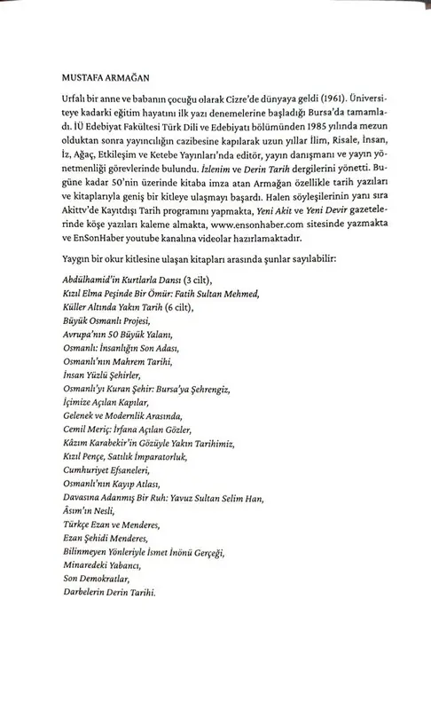
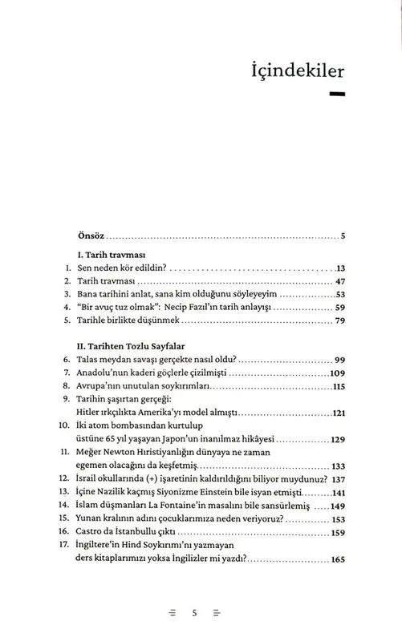

Sen Neden Kör Edildin?
Bugüne kadar 50 kitaba imza atmış olan Mustafa Armağan’ın iddialı kitabı Sen Neden Kör Edildin? okurunu Batısından Doğusuna tarih okyanusunda bilgilendirmenin yanında düşündürücü bir maceraya çıkarıyor. Ezberleri sorgulamak ise yazarın vazgeçemediği tutkusu.
Mesaj, kitabın adıyla hazır açılır.
Künye
- Yazar
- Mustafa Armağan
- Sayfa sayısı
- 348 sayfa
- Boyut
- 13,5 × 21 cm
- Yayın yılı
- Ocak 2026
- ISBN
- 9786255529374
- Cilt
- Karton Kapak
- Kağıt
- Kitap Kağıdı
- Dil
- Türkçe
Kitap hakkında
Bu defa Talas Meydan Savaşı’ndan Newton’ın büyücülüğüne, Akşemseddin’in Fatih’e uyarı mektubundan Kur’an’a hakaret eden ressam ve müzeci Osman Hamdi’ye, eski Küba devlet başkanı Fidel Castro’nun İstanbullu bir aileye mensup olmasından dizisi çekilen Şakir Paşa’nın neden ve kim tarafından öldürüldüğüne, Üstad Necip Fazıl’ın tarihe bakışından Köy Enstitülerini gerçekte CHP’nin kapattığına... onlarca çarpıcı başlığı zihnimizdeki asırlık körlüğü aşmak için birer koçbaşı olarak kullanmakta. Maksadı, ülkemizdeki tarih öğretimine inat zihninizi sorgulama yeteneğiyle donatmak.
Kitabı okuyup bitirdiğinizde zaman tünellerinin birinden öbürüne geçe geçe zihin çeperlerinizin genişlediğini, dahası beyninizde kör edildiğimiz gerçeğin dünyasına dair bazı şimşeklerin çaktığını hissedeceksiniz. Sonrası size kalmıştır: Şimşeklerin çakma anlarında aniden agâh olduğunuz gerçeğin dünyasına da dalabilirsiniz, uykuya da. Tercih sizin.
Ne var ki yazar Sen Neden Kör Edildin? diye sorarak kazıyı başlatmıştır bir kere. Yazdıklarını asla görmezden gelemeyeceksiniz.
“Tarih milletlerin tarlasıdır. Her millet mazide bu tarlaya ne ekmişse istikbalde onu biçer” der Voltaire. Tarihin verimini sadece geçmişte değil, bugünde ve gelecekte arayanların kitabıdır elinizdeki.
Kitaptan ilk sayfalar.
İlk sayfalar yayınevinin izniyle gösterilmektedir.


Sen Neden Kör Edildin? · Mustafa Armağan
Nereden alınır.
Güncel satış koşulları için ilgili satış sayfasına bakın.
WhatsApp'tan sipariş ver
0505 980 87 35 · Mesaj, kitabın adıyla hazır açılır.